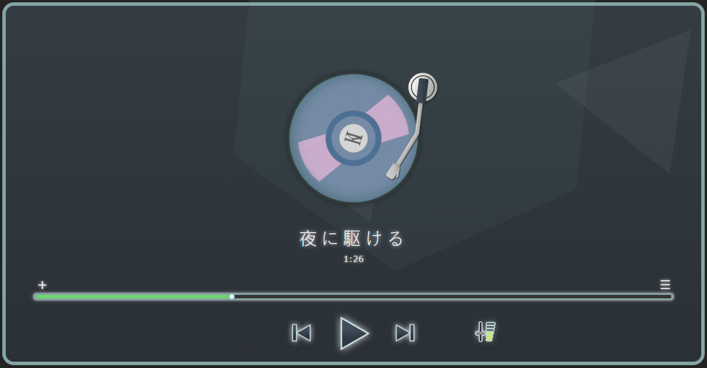

專案簡介
在自己的Linux主機建立的一個網站上加入一個音樂播放器。為了實現這一目標，找人幫忙進行平面設計，而我負責前後端的實作。至於後端部分，使用Django框架和MySQL資料庫來實現搜索功能。
技術棧
- 程式語言：Python, javascript
- 網頁開發框架：Django
- 資料庫：MySQL
前端設計
相關連結
預覽網址(※開放時間10:00am ~ 11:50pm) : https://evekai.hopto.org/music_play_visitor/
在自己的Linux主機建立的一個網站上加入一個音樂播放器。為了實現這一目標，找人幫忙進行平面設計，而我負責前後端的實作。至於後端部分，使用Django框架和MySQL資料庫來實現搜索功能。
預覽網址(※開放時間10:00am ~ 11:50pm) : https://evekai.hopto.org/music_play_visitor/